"la compañía que cambió el significado de infancia para siempre"
Disney es una de esas compañías que siempre estuvieron destinadas a cambiar el curso de la humanidad y la historia, desde sus comienzos la productora marcó hitos históricos. Hoy, conoceremos todo sobre este grande de los negocios y el entretenimiento.
| Antes de que Walt Disney y Ub Iwerks, fundaran la reconocida compañía del ratón, enfrentaron una serie de fracasos que hubieran desanimado a cualquiera.En enero de 1920, Disney e Iwerks traerían al mundo una compañía bajo el nombre de Iwerks-Disney Commercial Artists, que lamentablemente murió en tiempo récord debido a la falta de clientes. Luego de pasar un par de años adquiriendo experiencia en el mundo de la animación en Kansas City Film Ad, Disney se sintió lo suficientemente preparado para intentarlo nuevamente. En 1922 fundó Laugh-O-Gram Films, Inc, compañía dedicada enteramente a la animación de cuentos de hadas y relatos para niños, en dicha compañía también trabajó Iwerks. A pesar de que sus cortos alcanzaron una fama moderada en Kansas City, la compañía tuvo que ser declarada en bancarrota en junio de 1923, ya que los gastos de producción excedían los ingresos.Con sus sueños rotos y buscando un nuevo camino en el cine de acción real, Walt se dirigió a Hollywood, pero su destino lo encontraría nuevamente, esta vez en el garaje de su tío desde el cual envió Alice’s Wonderland (su último cortometraje donde combinaba animación y realidad) a la productora Margaret Wrinkler quien se interesó tanto por la técnica utilizada en el corto que contrató a Disney para que produjera más películas de este estilo.Con su entusiasmo renovado, Walt fue a visitar a su hermano Roy y proponerle que corriera con los gastos económicos de la nueva compañía, su hermano aceptó. Rápidamente la protagonista de Alice’s Wonderland, Virginia Davis y Ub Iwerks se trasladaron a Hollywood para dar comienzo a Disney Brothers’ Studio, el 16 de octubre de 1923, inmediatamente pusieron manos a la obra y comenzaron con la producción de la exitosa serie de cortos animados Alice Comedies. | 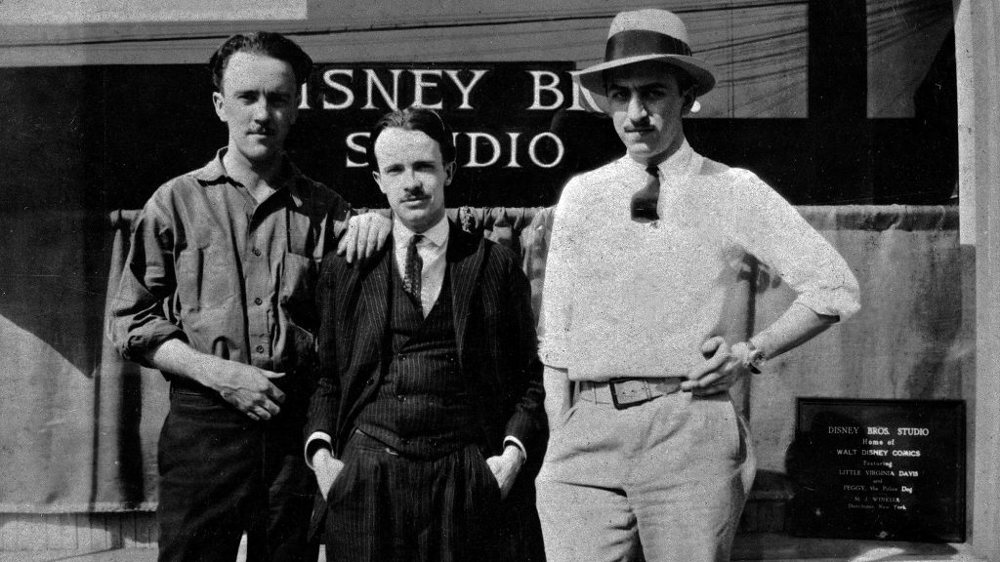 | |
| La serie animada mantuvo ocupado al estudio desde 1923 hasta 1927, liberando el primer episodio, de cuarenta y uno, el 1 de marzo de 1924 bajo el nombre de Alice’s Day at Sea. Finalmente, la pareja de animadores estaban viviendo de su sueño.Durante la producción de la serie, exactamente en 1925, tras mucha insistencia por parte de Walt, la compañía es renombrada como Walt Disney Studio. Una vez fue estrenado el último episodio de Alice Comedies, el 22 de agosto de 1927, la fórmula estaba agotada y recurrieron a un nuevo personaje Oswald the Lucky Rabbit, sin embargo, perdieron el contrato del personaje en 1928 en manos de Universal. Pero, este personaje serviría como inspiración para su más grande personaje y primer éxito abrumador: Mickey Mouse | ||
| La historia de la compañía cambiaría para siempre con la aparición de este ratón, creación de Iwerks y Disney. La primera aparición de Mickey Mouse, así como de Minnie, ocurrió el 15 de mayo de 1928 en Mickey Mouse: Plane Crazy. Poco tiempo después, el 18 de noviembre de ese mismo año, lanzan el tercer cortometraje de Mickey Mouse, Steamboat Willie, que marcaría un antes y después por dos razones: fue el primer cortometraje animado sonoro y fue oficialmente la primera cinta distribuida por Walt Disney Studio.En paralelo a la creación de Mickey, la compañía en 1929 comienza con la producción de una nueva serie, conocida como Silly Symphonies que fue estrenada con el popular episodio La danza del esqueleto.La compañía finaliza la década con el rebautizo de la compañía bajo el nombre de Walt Disney Productions, Ltd., y se crean otras tres compañías asociadas: Walt Disney Enterprises, Disney Film Recording Company, y Liled Realty and Investment Company. |
Para los treinta, Disney ya era una compañía de animación con unas bases bien establecidas y los personajes icónicos que formarían parte del mundo de Mickey Mouse, comenzaron a aparecer uno tras otro:
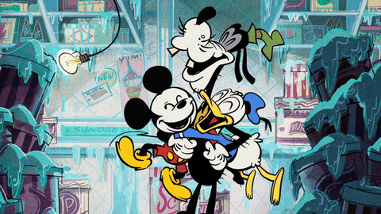
El 30 de julio de 1932, con el estreno del episodio Flowers and Trees de la serie Silly Symphonies, la compañía marcaría otro hito histórico, nada más y nada menos que la primera película de animación en Technicolor.
Otros cortometrajes que destacaron durante la década fueron:
haciéndose acreedores de varios Oscars con algunos de ellos.
Parecía que la década no podía ser mejor para la compañía, hasta que el 21 de diciembre de 1937, estrena su primer largometraje Blanca Nieves y los siete enanitos, que estuvo en proceso de producción desde 1930. La película rápidamente se convirtió en un éxito rotundo, siendo el primero de todos los venideros con la misma fórmula: cuentos de hadas llevados a la gran pantalla como largometrajes.
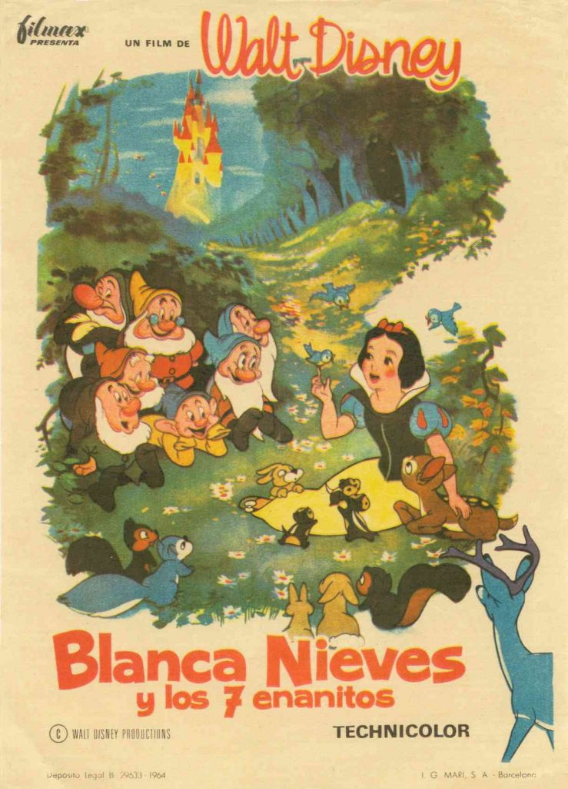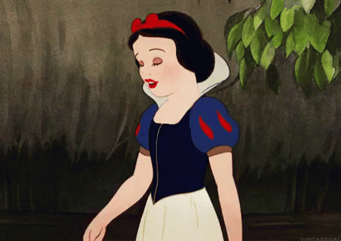
El 29 de septiembre de 1939 las empresas de Walt Disney Enterprises: Disney Film Recording Company, Liled Realty Investment Company se fusionan en Walt Disney Productions.
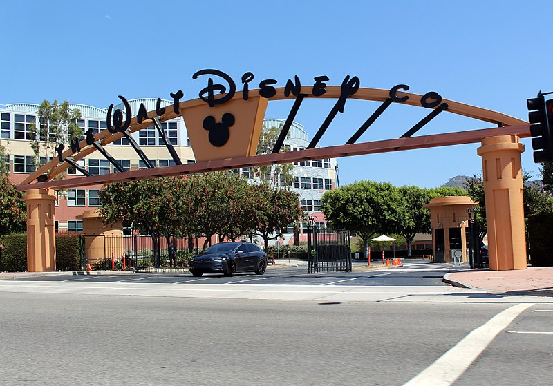
Comenzando la cuarta década del siglo XX, Disney estrena:
Pero, quizás, lo más importante que pasó en esta década fue la incursión de la compañía en un nuevo modo de entretenimiento: los parques temáticos, este largo y complicado camino comenzaría el 16 de diciembre de 1952 con la fundación de WED Enterprises y sería consolidado con la inauguración del primer Disneyland el 18 de julio de 1955 en Anaheim, California, que se convirtió en un total desastre por distintos factores. El mismo Walt lo calificó como desastroso, los medios como decepcionante y ese domingo de verano fue nombrado como “el domingo negro de Disneyland”. Sin embargo, Disney supo enfrentarse a las dificultades y al día siguiente el estreno al público general fue exitoso y en menos de un año Disneyland se había convertido en una fuente imparable de fortuna, mejorando considerablemente la situación económica de la compañía y convirtiéndola en algo más que una productora.
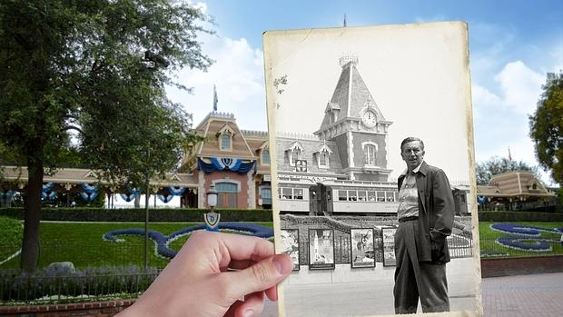
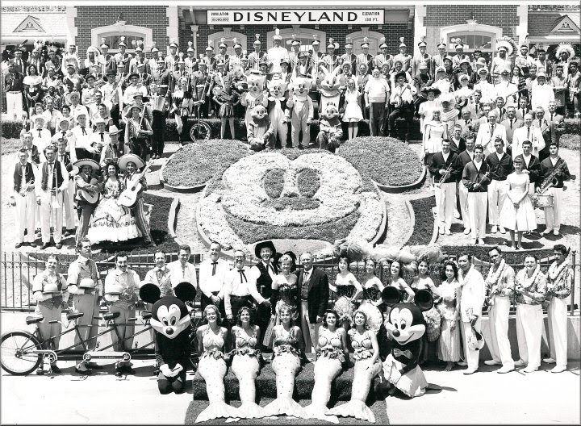
Para el comienzo de los sesenta, la compañía se consolidó como la más importante en entretenimiento familiar del mundo, y la década sólo serviría para demostrar que estaban en lo correcto, en esta epoca estrenaron:
El 15 de diciembre de 1966, fallece Walt Disney a la edad de 65 años, luego de llevar una exitosa compañía sacada, prácticamente, de las entrañas de un garaje. Con la muerte de Walt, Roy se ve en la obligación de tomar el control total sobre la compañía, hasta 1968, año en el que cede la presidencia a Donn Tatum. Un año después de la muerte de Walt comienza la construcción de Walt Disney World y se libera la aclamada producción El Libro de la Selva. En 1971, finalmente se abre al público el Walt Disney World, poco tiempo después de ver el sueño de su hermano realizado, Roy muere de un ataque repentino al corazón. Inmediatamente Donn Tatum abandona el puesto y es sustituido por E. Cardon Walker. Tal parece que a pesar de todos los esfuerzos de Walker por mantener a nivel la compañía, la ausencia de los hermanos Disney se hizo notar y fue imposible negarlo. Este hecho fue más que obvio durante los setenta, década en la que sólo se estrenaron 4 películas bajo el sello de Disney, con una repercusión muy baja, siendo las más exitosas:
En 1981 comienzan los planes para abrir un canal de televisión por cable, que finalmente se materializa con la inauguración de Disney Channel el 18 de abril de 1983.
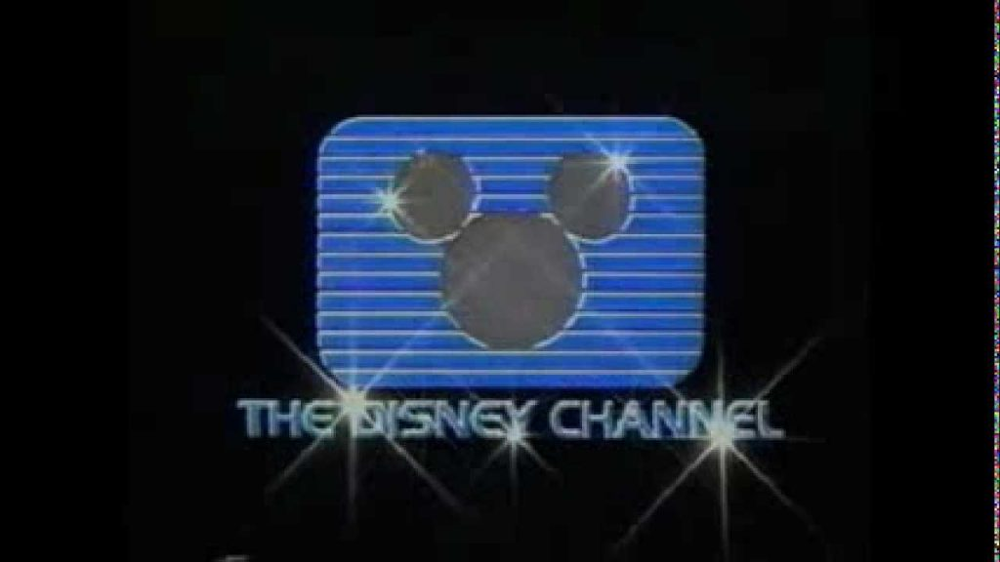
En 1984 se funda Touchstone Pictures y el estudio escapa de una compra por Saul Steinberg, Roy E. Disney y sus socios. Stanley Gold destituye del cargo de CEO a Ron W. Miller, reemplazándolo por Michael Eisner (CEO) y Frank Wells (Presidente). Ocurriendo así el primer Save Disney.
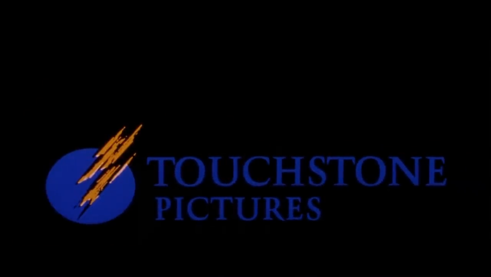
En 1985 en un intento por obtener más ingresos, la compañía comienza a hacer cortos animados para la televisión. Por otra parte, Pinocho es lanzado en cinta de vídeo y se convierte en un súper éxito en ventas. El 6 de febrero de 1986 la compañía es renombrada como The Walt Disney Company, su nombre definitivo. Un año después, en 1987 la compañía firma un acuerdo con el gobierno francés para construir el primer Resort de Disney en Europa, sería conocido como Euro Disney Resort (más tarde Disneyland París Resort). A pesar de todos estos contratos, lanzamientos, renovaciones y modificaciones, The Walt Disney Company se encontraba enfrentado la peor crisis de la compañía desde La Segunda Guerra Mundial. La salvación de Disney llegó con la reutilización de su antigua fórmula, los cuentos de hadas, se estrena el largometraje La Sirenita e inmediatamente se convierte en un éxito rotundo a nivel mundial, dando comienzo a una nueva etapa dorada, conocida como “El Renacimiento de Disney”.
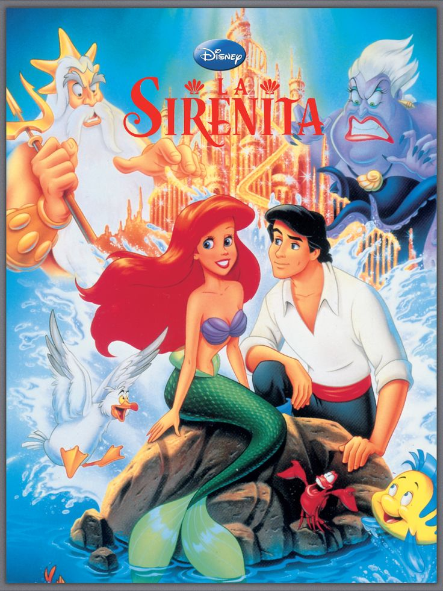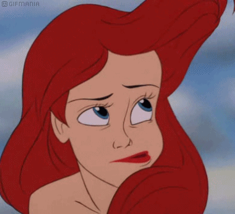
La década finaliza con la inauguración de los Walt Disney-MGM Studios en Walt Disney World.